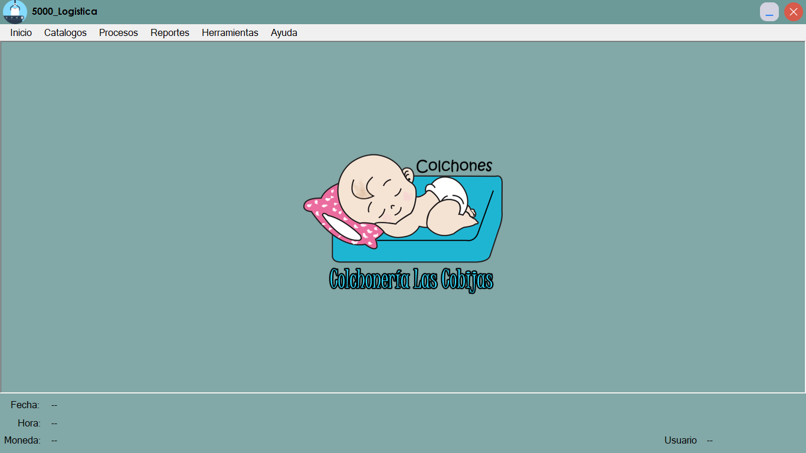
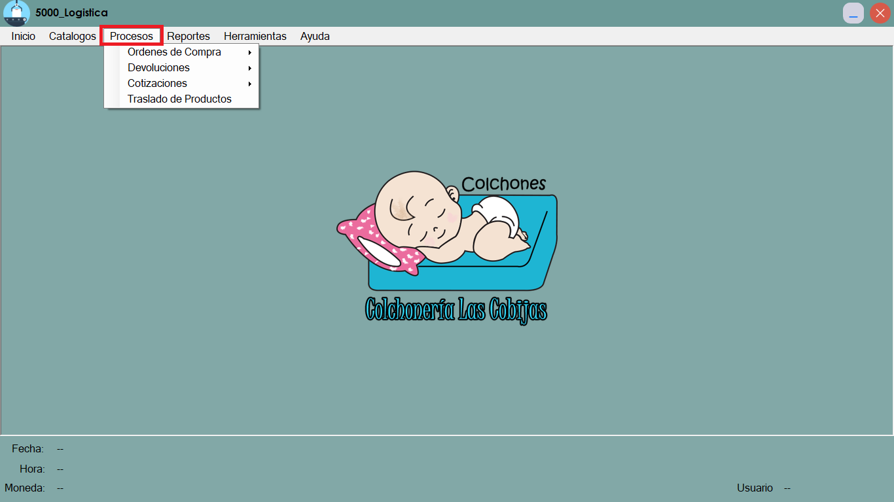
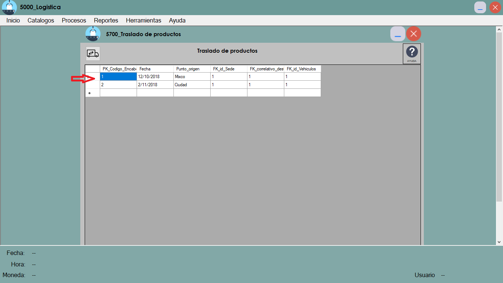
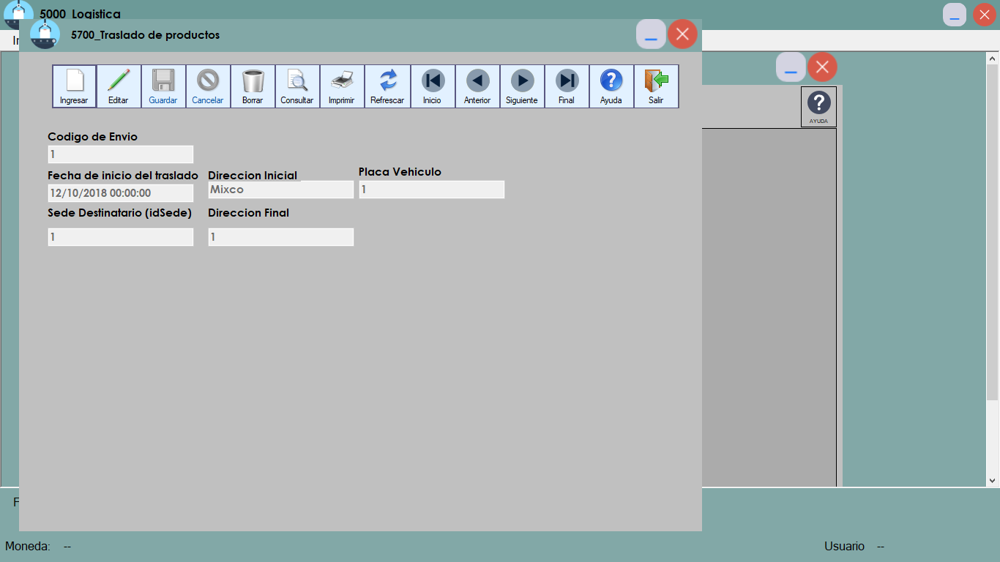
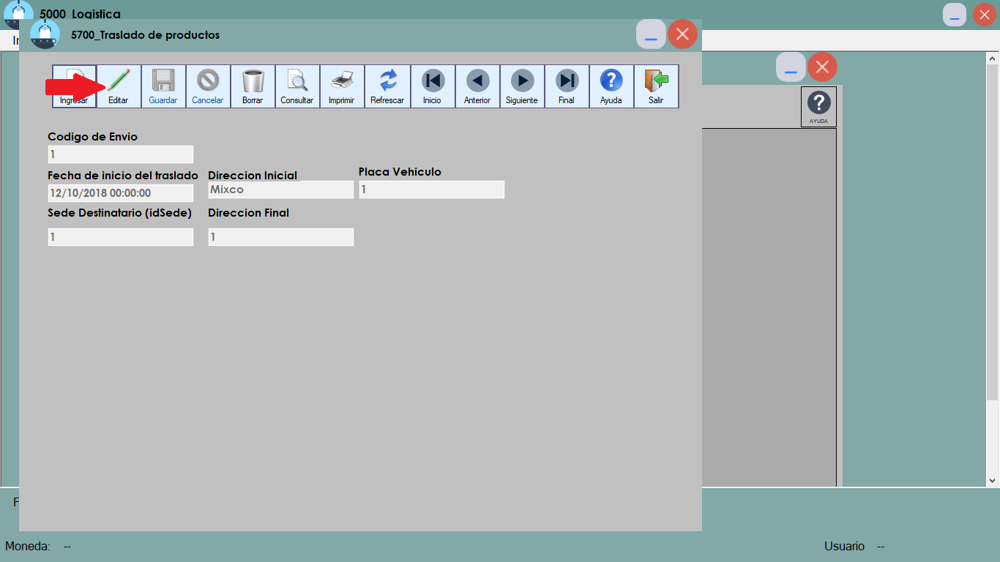
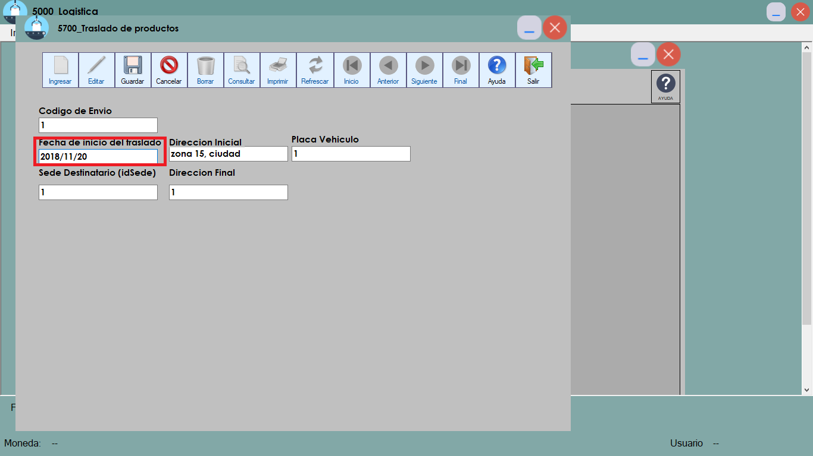
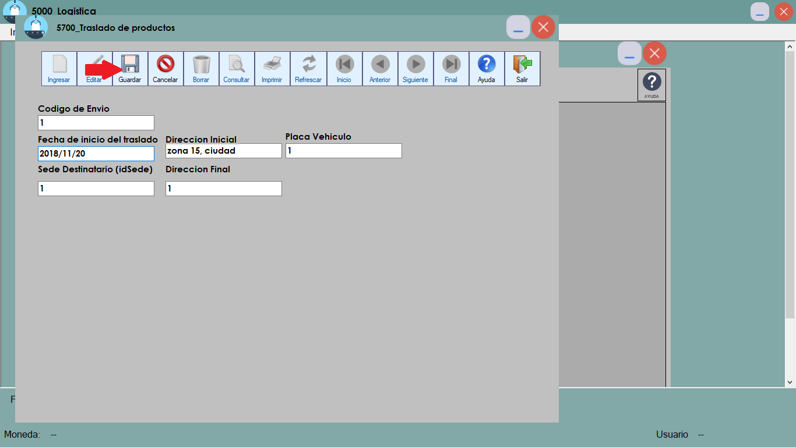
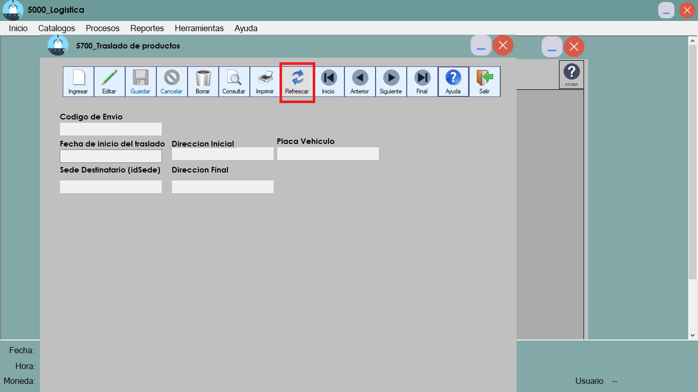

AYUDA TRASLADO DE PRODUCTOS
A continuacion se mostrara los pasos para poder ingresar y modificar en el espacio de traslado de productos
Primeramente se mostrar el programa del modulo Logistica(En este programa solo se encuentra Traslado de productos)

Se pone el puntero en la opcion "Procesos"

Hacer Click en el boton de TRASLADO DE PRODUCTOS para entrar en este proceso

Se mostraran los envios que se han realizado, en el cual daremos doble click en uno de los envios visualizados para poder editar o ingresar un nuevo envio

Se abrira la ventana donde apareceran los campos seleccionados anteriormente para poder editarlos

Se presiona el boton editar para poder modificar campos en el envio realizado

*IMPORTANTE*
La modificacion de la fecha, como la insercion de la fecha debe ser del siguiente formato: YYYY/MM/DD
Ejemplo: 2018/12/25

Despues de haber modificado o ingresado se presiona el boton Guardar

Se presiona el boton refrescar para poder visualizar el nuevo Envio

NOTA IMPORTANTE
En esta fase no se pudo realizar la utilizacion de combobox, utilizar el repoteador y seguridad ya que la herramienta "NAVEGADOR" no esta hecha de forma correcta en este momento,
y es el encargado de estos aspectos, se espera corregir todos los errores para la siguiente entrega